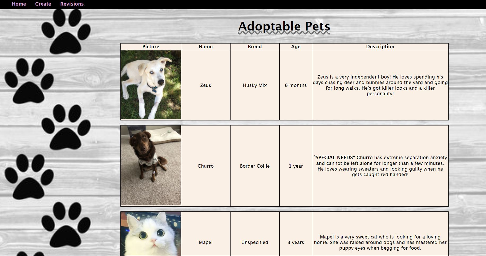
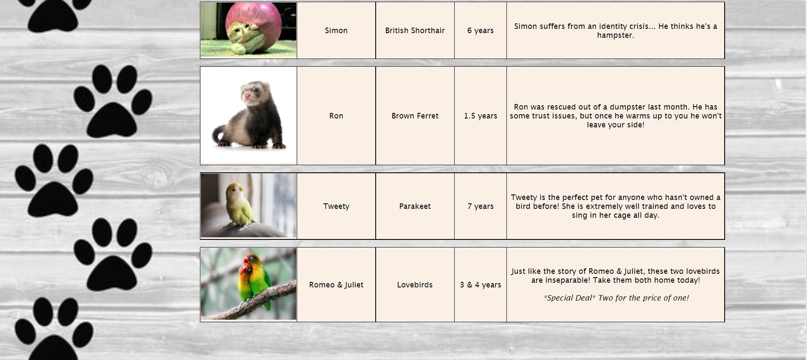
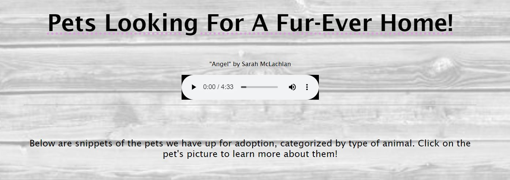
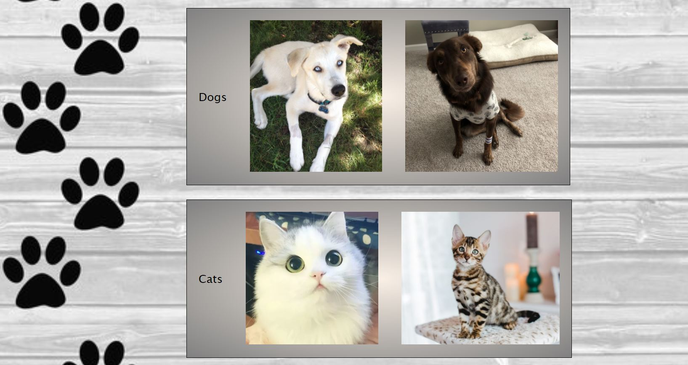
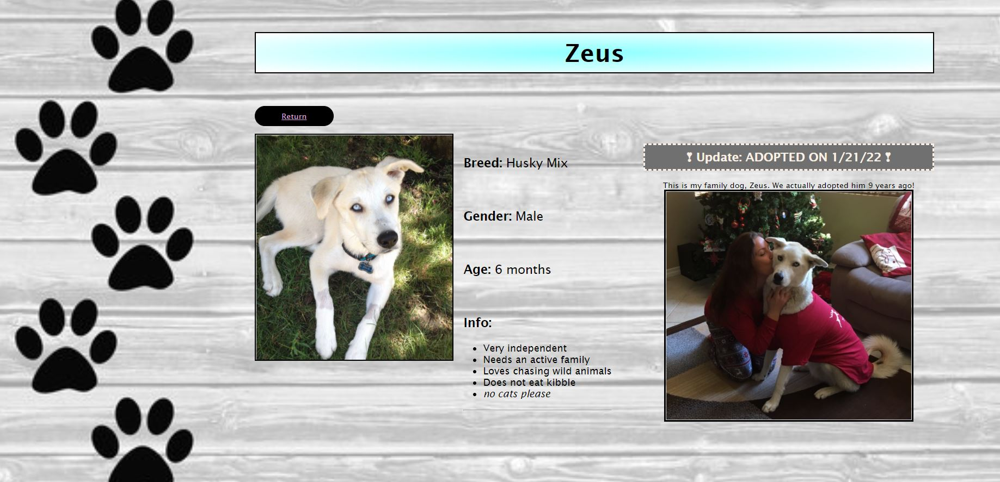
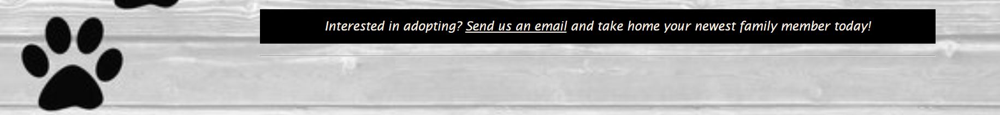

I asked someone who is simultaneously my biggest supporter and my biggest critic, my mother, to
review my Adoption page. Since my love for animals stems from her, I thought it was
only right to have her critique my website. (And, of course, since our family dog
Zeus is front and center on the page!)
My wonderful mother did not hold back on her demands for my website, and I will be
the first to admit these were difficult incorporations. Her recommendations are as
follows:
"Every adoption website needs to have a tug at the heartstrings"
"There is no sense to this page, there needs to be a filter system"
"Where are the success stories?? My baby Zeus was adopted!!"
"How do I adopt one? There's no instructions, Lauren."


Needless to say, I had my work cut out for me. The first item I jumped on
was "tugging on heartstrings." There's no better tear-jerker than
Sarah McLachlan's "Angel" which was used in those hard-to-watch SPCA commercials
about 10-15 years ago. Listening to that song while scrolling through homeless
pets would surely engage the target audience. I also thought a more welcoming title
would quickly grab attention.

Also seen above, I mention the pets are categorized on the home page by type of
animal, rather than all in a table together. Below is an example of the Dog and Cat
sections. Now, rather than all of the information being dumped on one page you can
click on the pet you are interested in and learn more about them! Since creating
a working filter may be a little out of my league at this point in my journey,
I thought this would work in it's place.

When I click on the picture of Zeus, the screen below will display. This is where
all the pet information is held. Since Zeus has been adopted, as my mother pointed out,
I added an adoption section for him (and Churro). Although it wasn't a specific request,
I also added a convenient "Return" button that takes you back to the Pet Overview page.

Last but not least, I added a footer section that instructs the user to send an
email if they are interested in adopting, with a working link.
